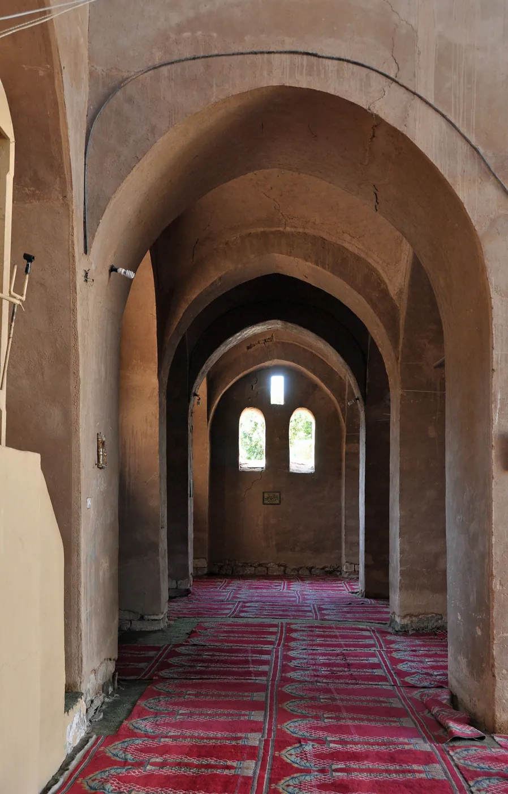
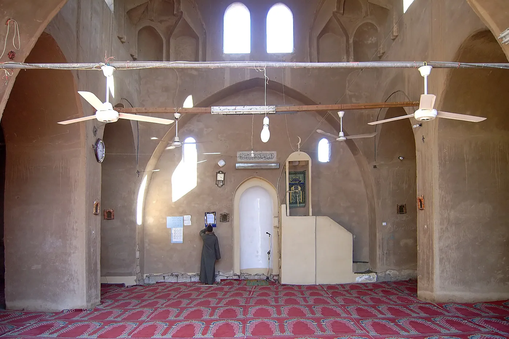
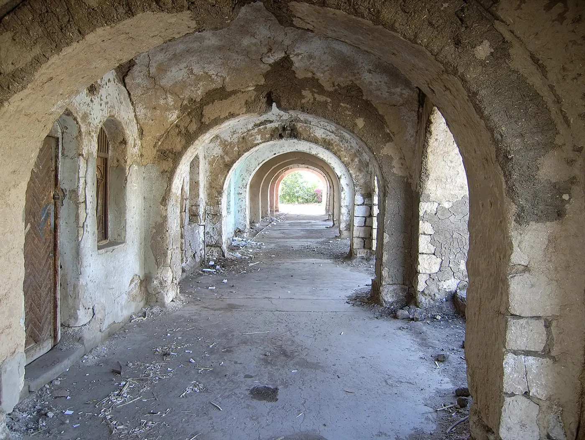
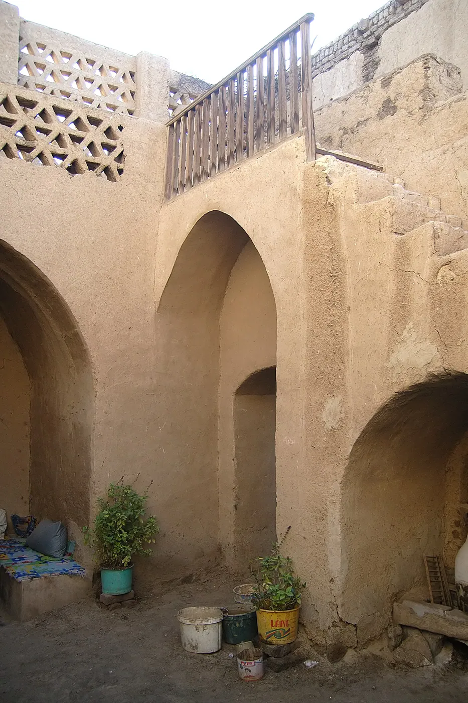

1/8 · Exterior · Gurna (Luxor, Egypt): the mosque (architect: Hassan Fathy)Photo: Marc Ryckaert · CC BY 3.0 · source2/8 · Exterior · Gurna (Luxor, Egypt): the mosque (architect: Hassan Fathy)Photo: Marc Ryckaert · CC BY 3.0 · source3/8 · Exterior · Luxor (Egypt): New GournaPhoto: Marc Ryckaert · CC BY 3.0 · source4/8 · Exterior · Dwelling houses in new GurnaPhoto: Roland Unger · CC BY-SA 3.0 · source

5/8 · Interior · Gourna (Luxor, Egypt): interior of Hassan Fathy's mosquePhoto: Marc Ryckaert · CC BY 3.0 · source

6/8 · Interior · Mihran and minbar of the mosque in New GurnaPhoto: Roland Unger · CC BY-SA 3.0 · source

7/8 · Detail · Arcades at the market in New GurnaPhoto: Roland Unger · CC BY-SA 3.0 · source

8/8 · Detail · Court of a house in new GurnaPhoto: Roland Unger · CC BY-SA 3.0 · source